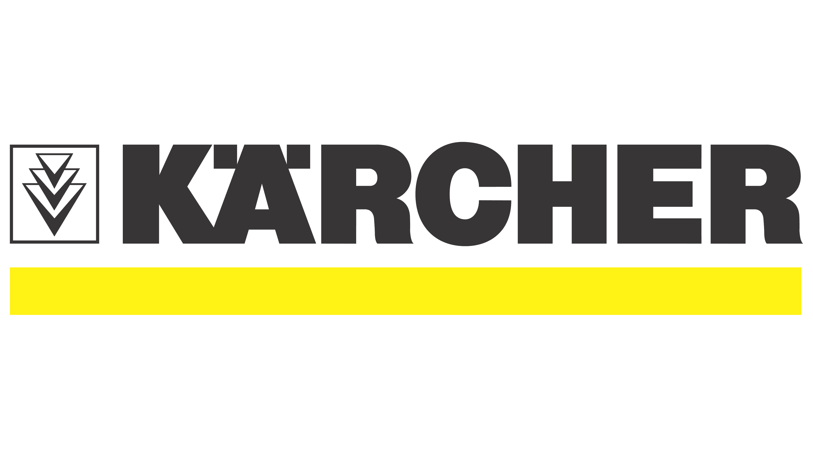

Experiência
 Assistente administrativoPeríodo: fev de 2021 - set de 2021 · 8 meses
Funções: Realizava emissões de relatório, tratativas com clientes, movimentações de estoque através das plataformas SAP e WMS.
Técnico de suporte de TI
Período: fev de 2022 - jun de 2022 · 5 meses
Funções:Manutenção de computadores no geral, instalação de hardwares, help desk (suporte a sistemas da empresa para usuários externos e internos), instalação de softwares em equipamentos, gerenciamento de equipamentos de TI, controle de estocagem de equipamentos de TI, criação e gerenciamento de e-mails.
Período: jun de 2022 - atual
Funções:Manutenção de computadores no geral, instalação de hardwares, help desk (suporte a sistemas da empresa para usuários externos e internos), instalação de softwares em equipamentos, gerenciamento de equipamentos de TI, controle de estocagem de equipamentos de TI, criação e gerenciamento de e-mails.